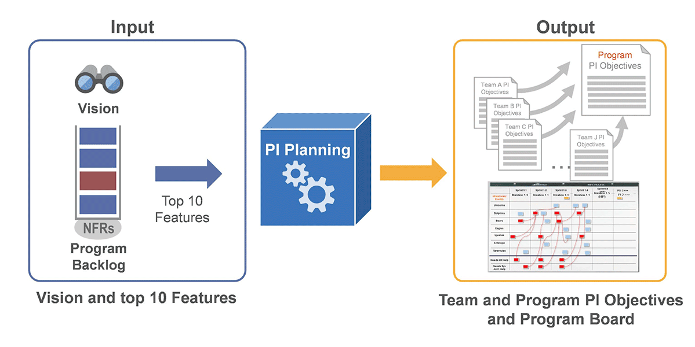

Qu’est-ce qu’un PI Planning Board ?
Le PI (Program Increment) Planning constitue un événement central du framework d’agilité à l’échelle SAFe (Scaled Agile Framework). Généralement, toutes les dix semaines (ce qui correspond à 5 sprints), tous les membres et parties prenantes du programme (appelé Agile Release Train dans SAFe) se réunissent pour une série d’ateliers s’étalant sur 2 jours.
Pour les équipes Agiles qui composent le “train”, l’objectif est de s’aligner sur la vision et les grandes fonctionnalités à développer au cours des prochains mois. Le PI Planning Board est le support qui permet aux managers du programme de faciliter l’événement et de construire la roadmap inter-équipe (appelée Program Board).
A travers cet événement et tous les autres aspects du framework, SAFe a été conçu pour répondre à deux enjeux que les frameworks Agiles Scrum et Extreme Programming ne pouvaient pas traiter à eux seuls :
- Le premier challenge est d’étendre la méthode Agile au-delà du seul développement produit. Il s’agit ainsi de faire entrer dans un cadre Agile la définition de la stratégie, la réflexion sur les aspects d’architecture, l’allocation des ressources, et la capacité à tester le produit de bout en bout;
- Le second enjeu réside dans la coordination de plusieurs équipes Agiles qui participent au développement du même produit.
Dans ce cadre, le PI Planning permet aux équipes de s’accorder sur les jalons cruciaux à respecter et d’identifier les éventuelles dépendances de fonctionnement entre les différentes équipes, ce qui permet, ainsi, d’évaluer et de prévenir les risques opérationnels. Par ailleurs, cet événement offre aux acteurs du programme une opportunité de socialiser et d’échanger de façon informelle, ce qui peut faire émerger des opportunités business.
Le processus de PI Planning d’après le framework SAFe.
En entrée d’un PI Planning, différents éléments sont apportés pour alimenter l’événement :
- Le context business, généralement présenté par un business owner, qui décrit les enjeux et les objectifs actuels de l’organisation et du programme ;
- Une roadmap high-level et la vision de l’organisation pour le programme ;
- Les 10 grandes fonctionnalités prioritaires dans les mois à venir.
A l’issue d’un PI Planning, vous devriez normalement repartir avec :
- Pour chacune des équipes, des engagements sur une roadmap à 10 semaines pour laquelle la valeur business de chacune des initiatives a été évaluée ;
- Le Program Board, qui est l’artefact de management visuel qui permet aux managers du programme de projeter la roadmap de chacune des équipes, d’identifier les dépendances, et d’arrêter les jalons importants.
Comment construire un PI Planning Board complet ?
Le PI Planning Board traditionnel comporte les éléments suivants :
- L’agenda du PI Planning ;
- Le Program Board ;
- La matrice des risques ROAM : Il s’agit d’un modèle qui vise à identifier et à évaluer les risques et les obstacles du programme, avec pour objectif de réfléchir à des initiatives pour les atténuer ou les maîtriser ;
- Le vote de confiance, qui permet à tous les participants d’exprimer leur opinion concernant la faisabilité de la roadmap décidée pour le prochain incrément du programme ;
- La rétrospective du PI Planning, dont l’objet est de recueillir le feedback des participants et d’améliorer les prochains événements.
Le PI Planning Board peut être relié aux boards d’équipe, au sein desquels chaque équipe établit son plan, évalue la valeur business de ses objectifs, et identifie ses propres risques et obstacles.
Quelques ressources pour en savoir plus sur le PI Planning
- L’introduction au PI Planning de l’organisation Scaled Agile.
- Le billet de blog de Judicaël Paquet, Coach Agile, Le PI Planning en SAFe.
- L’article de Jean-Claude Grosjean, Coach Agile et auteur, sur son site Qu’est ce que le PI Planning SAFe ?